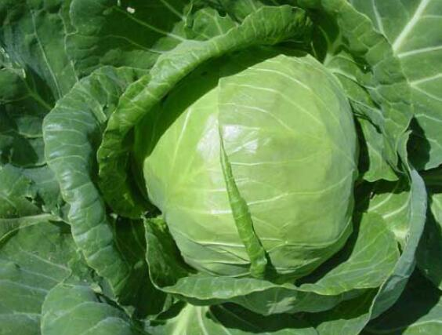

甘蓝十字花科芸薹属植物
甘蓝(学名：Brassica oleraceavar.capitataLinnaeus)是十字花科、芸薹属植物。二年生草本，被粉霜。矮且粗壮一年生茎肉质，不分枝，绿色或灰绿色。基生叶质厚，层层包裹成球状体，扁球形;二年生茎有分枝，具茎生叶。基生叶顶端圆形，基部骤窄成极短有宽翅的叶柄;上部茎生叶卵形或长圆状卵形，基部抱茎。总状花序顶生及腋生;花淡黄色，直径2-2.5厘米;花梗长7-15毫米;萼片直立，线状长圆形;花瓣宽椭圆状倒卵形或近圆形，顶端微缺。长角果圆柱形，两侧稍压扁，中脉突出，喙圆锥形;果梗粗，直立开展。种子球形，棕色。花期4月，果期5月。
原产于地中海北岩;中国各地均有培。喜欢温和冷凉的气候，不耐炎热，生长适宜的温度为10-20℃，25℃以上生长缓慢，不耐干旱与水渍，要求疏松、肥沃的土壤类型。
甘蓝营养元素很丰富如优质蛋白，纤维素，矿物质，维生素等等，吃甘蓝可以补充营养，强身健体。[1]作蔬菜及饲料用。叶的浓汁用于治疗胃及十二指肠溃疡。

抗癌
甘蓝菜所含的植化素可以作为重要的抗氧化剂和抗炎相关慢性疾病的预防，包含癌症。
和冠状动脉疾病
其丰富的抗氧化成分，可增强体内酵素系统的解毒能力，中和毒素对DNA产生的伤害，也可预防癌细胞转移。
改善胃溃疡
甘蓝菜富含甲硫丁氨酸，常见于甘蓝菜、莴苣、苜蓿芽。等绿色植物中，此成分可能帮助消化性溃疡的愈合。
改善血糖、血脂
经研究发现，甘蓝菜嫩芽可能改善第二型糖尿病的胰岛素阻抗，另外，一颗甘蓝菜约含7.8克的纤维质，而足够的纤维摄取可以延缓饭后血糖上升、促进血脂肪的代谢。维持骨骼密度。维持骨骼密度除了足够钙质、维生素D之外，还需要多种营养素来维持骨骼的新陈代谢，其中之一就是维生素K。维生素K是协助酵素合成与钙结合蛋白的辅因子，与维持骨骼密度有关。每100克的甘蓝菜富含约100-200微克的维生素K9，摄取100克即可达到一天的足够摄取量，避免维生素K缺乏。
 上一篇
上一篇